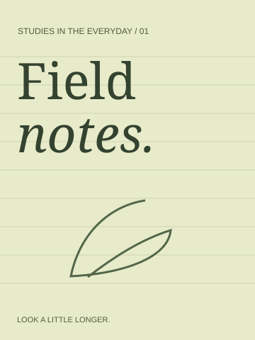
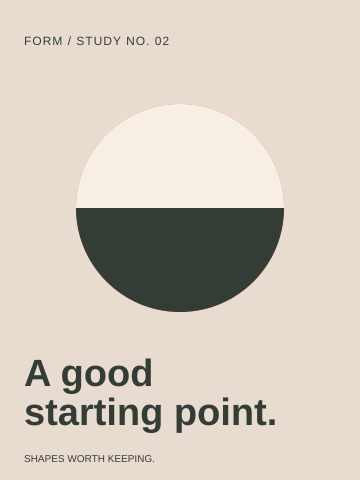
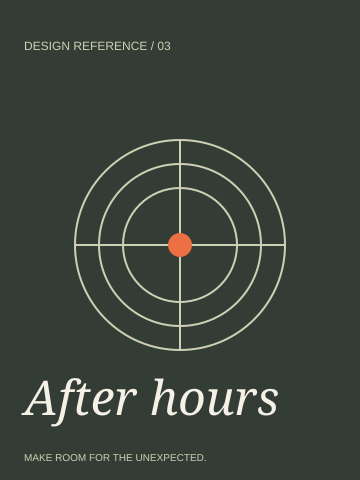
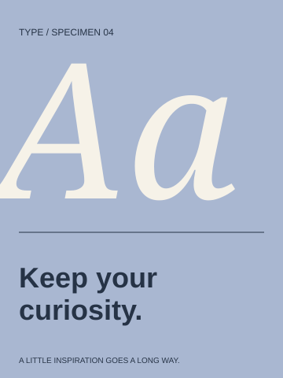

Your board, on disk.
Open a Pinterest board and extract its pins. Keep everything or tick just a few. Download original image files in a ZIP, with a report for anything that failed.
PINTEREST → ZIP
A SMALL TOOL FOR BIG REFERENCE BOARDS
The pins you save deserve a place in your work. Take a whole Pinterest board, pick a few favorites, or bring them straight into Figma.
Free & open source · Chrome 116+ · Install unpacked




01 / THE WORKSPACE
A quiet companion beside your board. Extract, check the count, and choose what to keep. Need more room? Open the full workspace.
Interactive preview with four sample designs. Your Pinterest session is never accessed by this website.
Sample ZIP includes all four original SVG designs. Checkbox selection here is a preview of the extension's pin picker.
02 / THREE WAYS TO KEEP AN IDEA
Open a Pinterest board and extract its pins. Keep everything or tick just a few. Download original image files in a ZIP, with a report for anything that failed.
Copy your selected pins, run the companion Figma plugin, and import. Images land as separate layers in a grid, with links back to their Pinterest sources.
Export selected Figma frames, layers, or a cropped slice. Bring the rendered images into Pinterest's Create Pin screen, choose a board, and publish there.
03 / THE DETAILS MATTER
04 / MAKE IT YOURS
BoardZip is distributed directly from GitHub. It's a development extension, not a Chrome Web Store listing.
Download the complete kit ↓Release notes ↗Extract the complete kit. In Figma Desktop, use Plugins → Development → Import plugin from manifest… and select figma-plugin/manifest.json.
If Figma asks for an ID, create a development plugin and use its generated ID. Native Figma installation remains unverified; see the setup guide.
Full setup guide ↗A FEW PRACTICAL QUESTIONS
There is no fixed pin or page limit. Pinterest can still restrict a feed, change its layout, or expose a partial inventory. BoardZip compares counts when available and reports incomplete results. Public board collection has been live-tested; large/private-board pagination still needs broader live testing.
The current version saves images and video cover images. Video/audio downloads and full carousel exports are not implemented.
No. BoardZip prepares an image in the Create Pin upload form. You review its preview, choose a board, and publish. If Pinterest's form changes, you can download and upload the image manually.
Your original design stays editable in Figma. Downloads and Pinterest transfers are rendered image/vector exports. Pinterest imports become separate image layers, rather than reconstructed design elements.
BoardZip has no backend or analytics. It requests board data and images from Pinterest. Figma stores imported images in your document through its own service. This landing page does not access your boards.
Built by Ayush Kumar. Found a rough edge? Open an issue, or make it better.